1. デザインの基礎
1-1. デザインを始める前に
- 【目的と目標の違い】
-
- 目的は「Webサイトで実現したいことは何か」であり、会社や製品の周知、販売促進、ブランドイメージの向上などが代表的。
- 目標は「Webサイトで達成したい数字は何か」であり、目的の過程や達成度合いを示すものといえる。期間に応じて短期、中期、長期に分けられる。
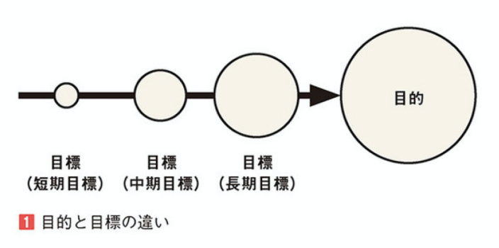
- 【KPIの設定】
-
- Webサイトで達成したい最終的な目標を「KGI（Key Goal Indicators：重要目標達成指標）」、その過程や手段ごとに設定する複数の目標を「KPI（Key Performance Indicators：重要業績評価指標）」と呼ぶ。
- Webサイト制作におけるKPIでは、求める具体的な成果数を表す「CV（Conversion）：コンバージョン」をどのぐらい獲得できたかを指標にすることが多い。
- 【ターゲットとペルソナ】
-
目的と目標が決まったら、ターゲットとペルソナを想定する。
- ターゲットとは、サイト、ブランド、製品を使用する特定の購入者層のことをいう。
- ペルソナとは、その層の中で、典型的なユーザーを表すために作成された仮想的な人物像のことをいう。
- 【コンセプト】
-
目的、目標、ターゲットが定まってきたら、コンセプトを固める。
- コンセプトとは、制作において全体を貫く基本的な観点・考え方のことをいう。
1-2. デザインの基本原則
デザインをする際の1つの目安として、以下の4つの原則がある。
- 近接
- 整列
- 反復
- コントラスト（対比）
- 【近接】
-
近接とは、関連する項目をまとめてグループ化させることをいう。
位置関係を明確にするだけで、視覚的にも知覚的にも認識しやすいレイアウトを作ることができる。
人は無意識のうちに同じ形をしたものや、近くにあるもの同士を1つの「まとまり」として認識しようとする。この性質のことを「ゲシュタルトの法則」という。
- 【整列】
-
整列とは、ページ上の要素を意図的に揃えて配置することをいう。要素になんらかのルールを適用し「統一化」することで、美しく、見やすいレイアウトになる。

- 【反復】
-
反復とは、デザイン上の何らかの特徴を、デザイン全体を通して繰り返すことをいう。サイトのナビゲーションなど、全体で共通の要素を繰り返し使用することにより、サイトの使い方を学習する時間を短縮させ、ユーザーに早くサイトに慣れ親しんでもらうことができる。

- 【コントラスト（対比）】
-
コントラスト（対比）とは、「強調したい内容」を明確にし、そうでないものと区別することをいう。明確な違いをつけることでデザインにメリハリがつき、情報を理解しやすくなる。

文字などの「大きい部分」と「小さい部分」の比率のことをジャンプ率という。
- 比率が大きいことを「ジャンプ率が高い」と表現し、インパクトや訴求力が高くなる。
- 比率が小さいことを「ジャンプ率が低い」と表現し、落ち着きや高級感のある印象を与えることができる。
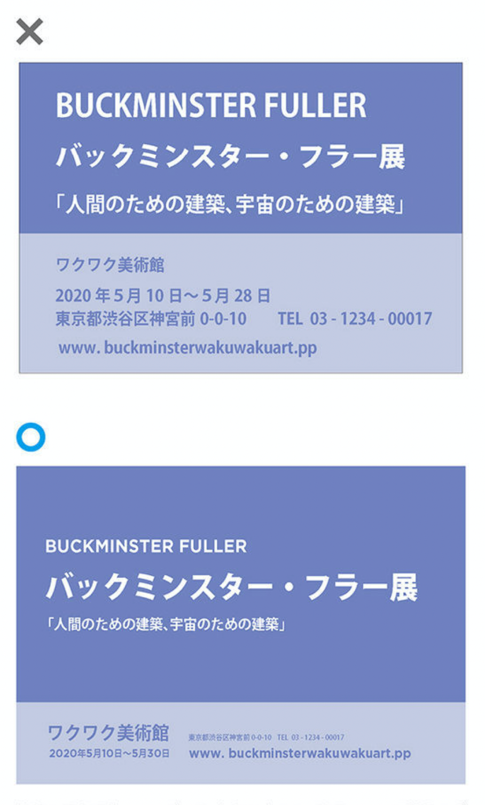
1-3. レイアウトのルール
- 【シンメトリー】
-
シンメトリーとは、「左右対称・反転」という意味。デザイン制作においては、対象物の中央に反転の軸となる仮想のラインや点を配置し、その軸を中心に各要素を対照的に配置する技法のことをいう。
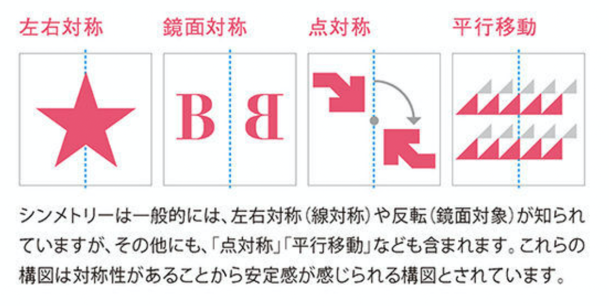
シンメトリーは安定感のある静的な印象を与え、「格式・伝統・クラシカル」といったデザインに適している。
- 【アシンメトリー】
-
アシンメトリーとは、「左右非対称・不均等」という意味。アンバランスさ、変化が特長で、オシャレでカッコいい印象を表現したいときのテクニックとして有効。
- 【黄金比】
-
黄金比とは、近似値「1:1.618（約5:8）」の比で表される比率をいう。
- この比率で作成された四角形を「黄金長方形」といい、黄金比で面分割することを「黄金分割」という。
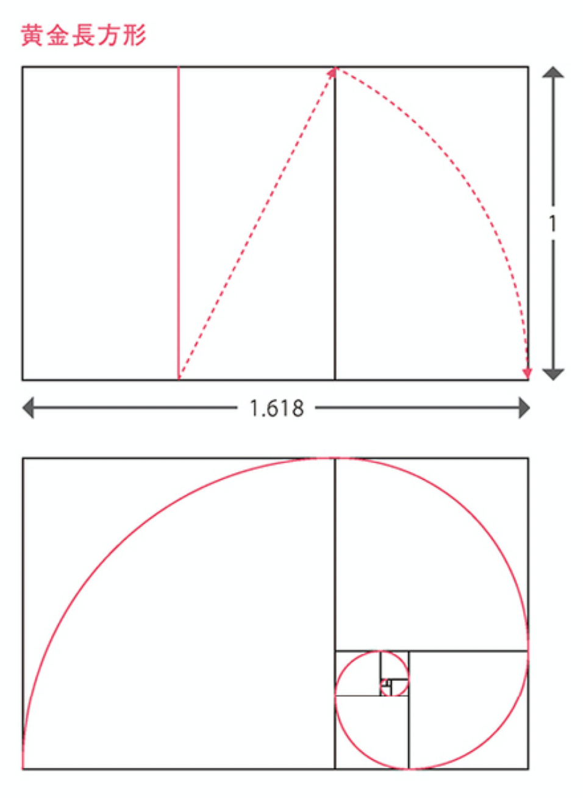
- 古代ギリシャ時代から「美しい比率」として扱われており、多くの建築物や美術作品に取り入れられている。
- この比率で作成された四角形を「黄金長方形」といい、黄金比で面分割することを「黄金分割」という。
- 【白銀比】
-
白銀比とは、近似値「1:1.414（1:√2）」の比で表される比率をいう。
- この比率で作成された長方形は「√2の長方形」と呼ばれ、A4、B4などの一般的な紙の比率とも同じである。
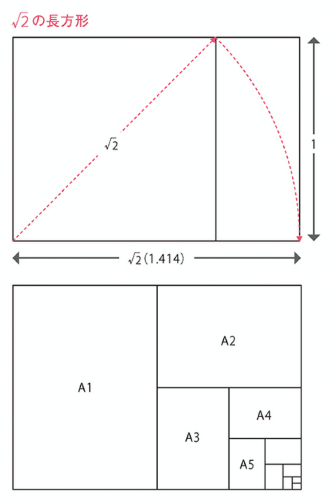
- 日本の伝統的な建造物の比率によく見られ、「大和比」とも呼ばれている。
- この比率で作成された長方形は「√2の長方形」と呼ばれ、A4、B4などの一般的な紙の比率とも同じである。
1-4. Webデザインにおけるレイアウト
- 【グリッドレイアウト】
-
グリッドは「格子状」という意味で、Webデザインにおいてグリッドとは、垂直と水平方向に分割するガイドラインのことを指す。垂直方向と水平方向に画面を分割することによって、整理されたコンテンツをデザインするためのマージンや段組を正確に分けることができる。

Webデザインのレイアウトでは、この段組のことを「カラム」と呼び、グリッドレイアウトによって作成されたWebサイトは「グリッドシステム」や「グリッドデザイン」などと呼ばれている。
- 【リキッドレイアウト】
-
スマートフォンサイトで多く取り入れられている手法。ブラウザの幅に合わせてコンテンツの幅、位置を可変で表示させる。
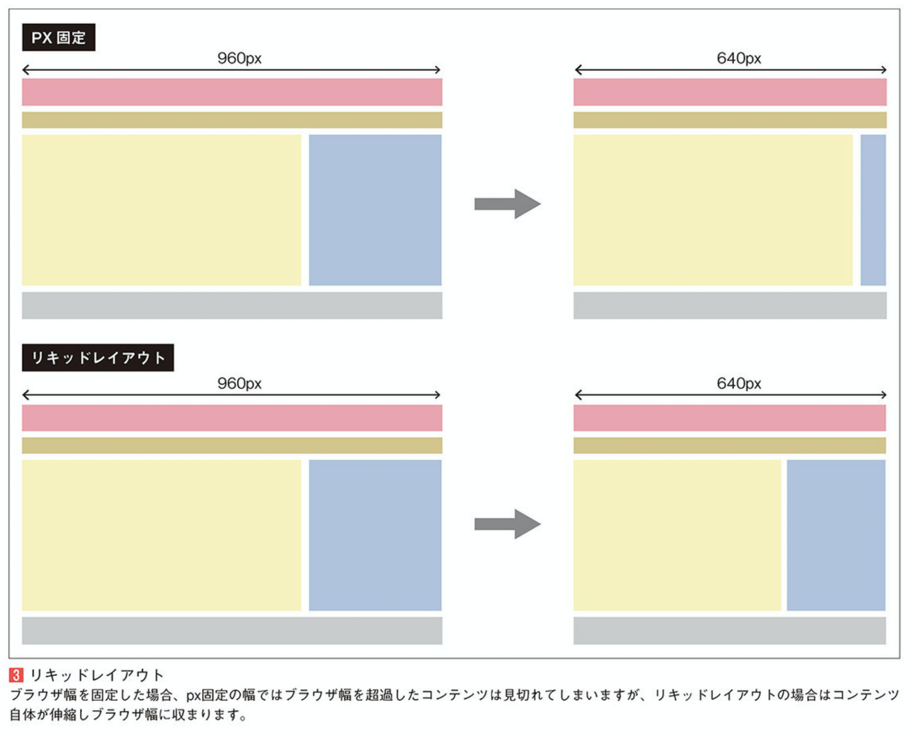
- 【ファーストビュー】
-
ファーストビューとは、ユーザがWebサイトに訪れた時に最初に目に入る部分のことをいう。ファーストビューはWebページをスクロールせずに表示された部分のみが対象であり、大きなモニターを使っている場合はファーストビューは広くなり、逆にスマホなど小さなモニターでは狭くなる。
ファーストビューにある大きな画像領域を「メインビジュアル」といい、「何をしているサイトなのかを視覚的に伝える」役割がある。
1-5. Webデザインにおけるナビゲーション
- 【階層型ナビゲーション】
-
グローバルナビゲーションと呼ばれることが多い。Webサイト全体を階層構造で表した時に、最上位の階層をメニュー化したもの。「反復」の法則に基づいて、どのページにも同じ位置に存在している。
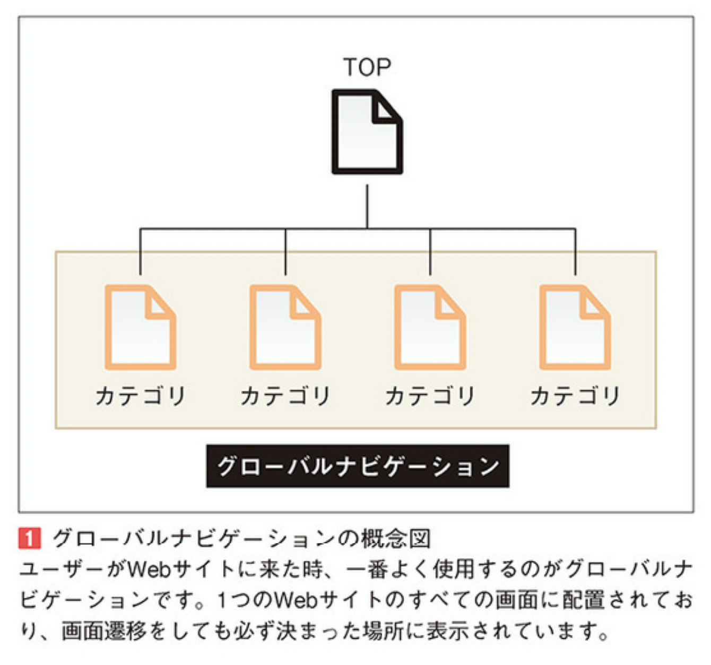
- 【ローカルナビゲーション】
-
先に説明したグローバルナビゲーションはWebサイト全体の構造を示すが、ローカルナビゲーションはグローバルナビゲーションの項目の中の詳細な内容を表示し、情報を見やすくする役割を持っている。
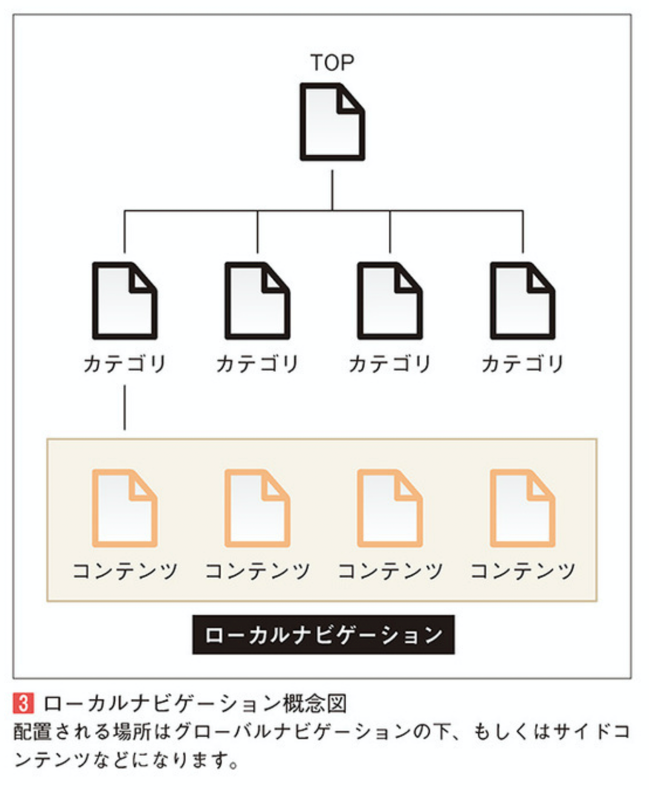
- 【ブレッドクラムナビゲーション】
-
今では「パンくずリスト」と呼ばれることが多い。現在見ているページのサイト内での位置やWebサイトの階層構造を不等号記号などで横並びに表示する形式になっている。
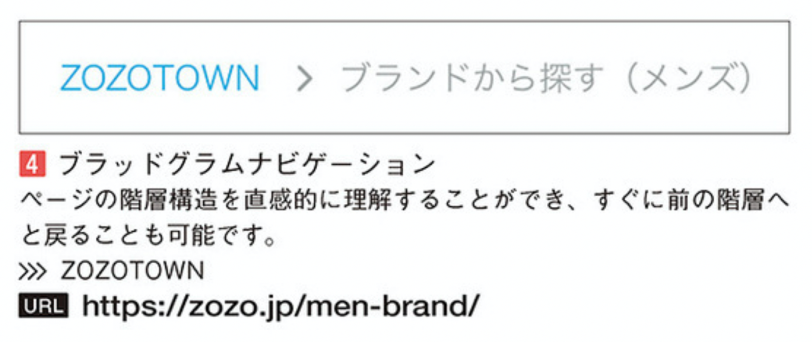
- 【ページネーション】
-
複数のページを行き来するのに用いられるナビゲーション。ページャーとも呼ばれる。
ブログの記事一覧や、検索結果のようにコンテンツが増えて1ページに表示しきれなくなってしまったページを、複数のページに分割して表示させる役割がある。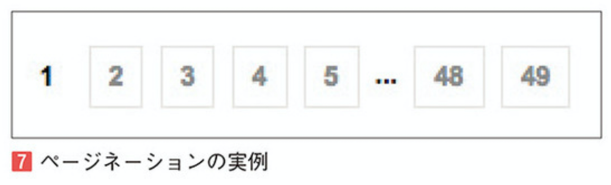
1-6. レイアウトにおける視線誘導
- 【視線は左上から右下へ】
-
人は何かの情報を見る時、左上から右下方向へ視線が流れるように移動する。この誘導方法は活版印刷の発明をしたグーテンベルクにちなんで「グーテンベルク・ダイヤグラム」と呼ばれている。
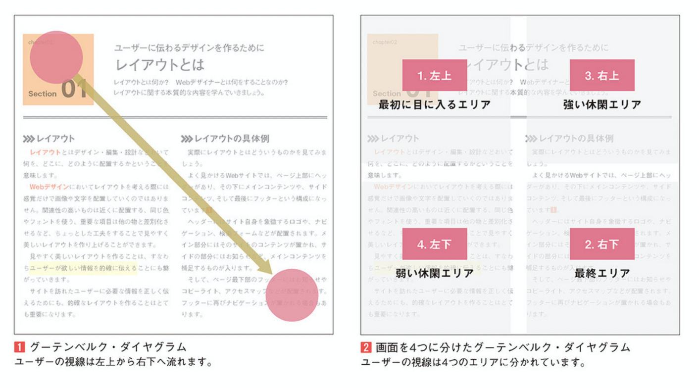
- 【Z型】
-
「左上→右上→左下→右下」と「Z」の形にユーザーの視点を誘導するレイアウトを「Z型のレイアウト」という。
これはWebデザインでよく見かける構図で、要素を順番に見ていくことで、興味のある情報であるかを伝えながらコンテンツを見せていくレイアウトである。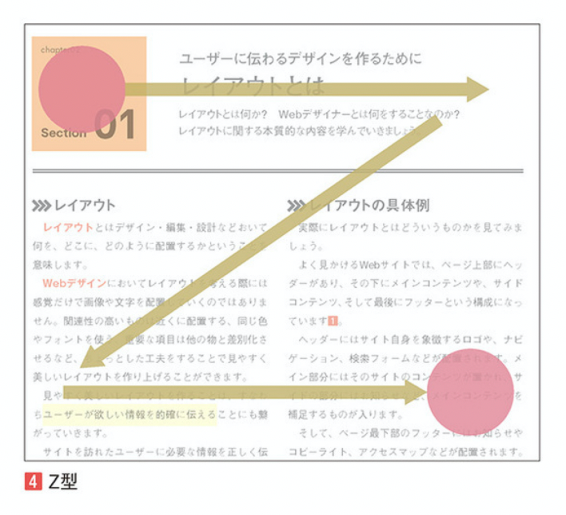
- 【F型】
-
「F型のレイアウト」は、ECサイトやブログなどで使用される誘導方法で、文章量が多くなった場合にもそれぞれのコンテンツを集中して見ることができる。
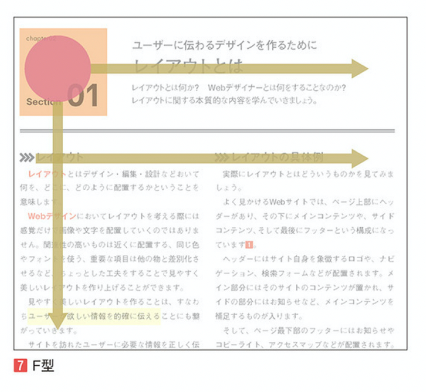